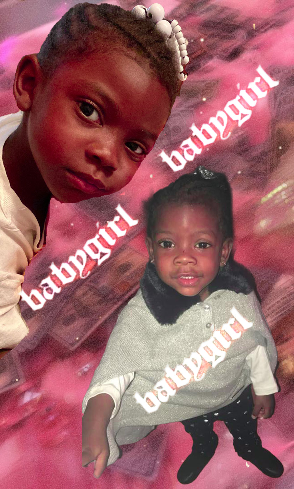

Welcome to my Portfolio

Business Card, created with Adobe Illustrator
ABOUT ME (:
I am 21 years old, and a third year Digital Culture and Design major with a focus on typography and graphic design. I enjoy creating, doesn't matter what it is. I love design, and also could see myself being an interior designer, specifically for homes. I am the middle child,and I think that makes me sort of rebellious. I like to think outside of the box and come at things with a different approach. One day, I hope to be really good at this coding so that I can expand with more business ventures.I also draw and paint, this was a thing that I did for a while to earn money, it was fun.
My career aspirations insist of becoming an event planner, I would like to help create the visuals for events such as babyshowers, birthday parties, gender reveals, weddings, graduation parties, you name it. The small party favors would be my thing, like banners, table toppers, buttons, t-shirts, and the whole nine yards. I am getting so close to learning all the steps, after I graduate I will be ready to purchase all of the equipment I need and have me a sort of design studio. My bestfriends will be my business partners and I believe that we will go far being that we all have passion and creativity isntilled in us.

My aesthetic is unapologetically me. I am young, care free, black, intelligent, and head strong. I love all variations of color, mostly darker colors but I also enjoy sparkles, gifs, and motion. I want to work on learning more about animated backgrounds and implemeenting more motion into my coding.
PORTFOLIO
Adobe Illustrator & Photoshop
DCD 3O2 x Visual Methods
Spring 2021


Blended photo-montages.


Popular Art of mine
-
 Freehand Art
Freehand Art
Black Girl Magic x by ME -
 Bookstagram Assignment
Bookstagram Assignment
Shot by Me -
Blended montage of my baby sister Autym
Shot by Me